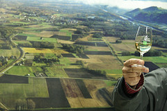
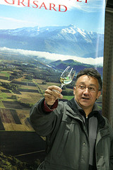

Vin de Savoie...ili šta bi Marquis de Sade video da je ćelija imala prozor
Vekovima je oblast Savoie (Savoa, Savoj, Savoy, kako god...) bila samostalna i pored jugoistočnog dela današnje Francuske obuhvatala je deo Švajcarske i deo Italije, pa ne čudi primetan lokal-patriotizam. Prva stvar na koju nam skreću pažnju je utvrdjenje na nekadašnjoj granici. Naša destinacija je jedan podrum u dolini Combe de Savoie, vinarskoj regiji iz koje se godišnje širom sveta izveze preko 20 miliona čokota vrhunskih plemenitih vrsta vinove loze: Aligote, Altesse, Jacquere, Chardonnay, Velteliner, Mondeuse, Mondeuse blanche, Gamay, Pinot noir...
Sumrak je, ipak, dovoljno je svetla da se na par trenutaka prepustim pogledu: vinogradi i Alpi, tu, iznad.
Nakon dobrodošlice, dobijamo prve informacije o regionu - vinova loza se ovde gaji od pamtiveka, tradicije i običaji su duboko povezani sa proizvodnjom vina, uživancija.
A Combe de Savoie je zaista kao stvoren za vinogradarstvo. Na južnim padinama masiva Bauges (sa najvišim krečnjačkim vrhom u Evropi, preko 2400m.n.v.) uslovi za gajenje su idealni.
 Strpljivo, g.Philippe Grisard (desno) objašnjava neke izazove gajenja vinove loze.
Strpljivo, g.Philippe Grisard (desno) objašnjava neke izazove gajenja vinove loze.
Smirenost, i tiho zadovoljstvo primetni su na njegovom licu, kriza koja pogadja francusku vinarsku industriju i problemi zbog liberalizovanog uvoza nisu njegova briga. On tvrdi da je odgovor veoma jednostavan - kvalitet. Nakon upoznavanja sa tipičnim vrstama vinove loze koje se uzgajaju preko 150 godina u porodici Grisard vreme je da se upoznaju tajne testiranja vina.
 Za početak, da ne bude zabune, osnove držanja čaše.
 Slede uputstva za posmatranje vina, tragova koji ostaju na zidovima čaše, pene...
Zatim miris, prvi udah, kraći, zatim jedan duži. Koncentracija.
A onda, usta. Uputstva pre prvog gutljaja, et voila, Malvoisie.
Priča o karakterizaciji vina uz drugo vino koje testiramo, Roussette. Uprkos svim naporima, ne uspevam da osetim mango i liči, ipak prija.
Vreme je da sidjemo u podrum u kome u hrastovini skoro godinu dana provodi dobar deo godišnje proizvodnje. Tu testiramo treće belo vino, opet je u pitanju Roussette, samo za razliku od prethodnog ovo vino je odležalo godinu dana u buretu. Razlika je fascinantna! Tek uz krajnju koncentraciju uspevam da prepoznam karakter vina i da ga povežem sa prethodnim.
Na pitanje koje je najstarije vino koje podrum ima, stiže spremno odgovor - 1904. Ipak, to niej i najbolje vino koje podrum poseduje, najbolje je iz 1973 (zaboravio sam koje vino je u pitanju).
 Detalji iz podruma: flaše u kojima se vino čuva po nekoliko decenija; neibežni grb oblasti Savoie
Detalji iz podruma: flaše u kojima se vino čuva po nekoliko decenija; neibežni grb oblasti Savoie
Potrebna mi je pauza, izlazim na svež vazduh. Primećujem, visoko u planini, raskošno osvetljen zamak. Raspitujem se i saznajem da je u pitanju Chateau de Miolans, zamak star više od 500 godina, u kom je bio utamničen Marquis de Sade.
Testiranje se nastavlja: još jednom smo u prilici da testiramo vino i istančanost čula mirisa i ukusa, probamo crna vina Pinot noir, Mondeuse, prvo mlado, a zatim nakon godinu dana u buretu i dodatnih par godina starenja. Uz crna vina nam služe kobasice domaće proizvodnje. Uz stariji Mondeuse kobasicu sa mesom divlje svinje. Potpuno bez garda, ispitujem mogućnost da se vino kupi i na veliku radost pazarim par boca, po sećanju. Tu je negde i kraj posete ovom izuzetnom podrumu, ekipa je nestrpljiva jer nas u restoranu u brdima oblasti Chartreuse, nekih 30km zapadno, čeka tradicionalna večera i poslednja dva vina koja ćemo piti te noći. Pozdravljam se sa g.Grisardom i ponovo mu se zahvaljujem na iskustvu koje ću, sasvim sigurno, dugo pamtiti.
Komentari
 kiko | 29.03.07 15:24
kiko | 29.03.07 15:24
'73 je bila killer godina, naravno ;) a kako mango i lici, odakle? vino je francusko?
 RSS feed
RSS feed
 sadržaji se objavljuju pod
sadržaji se objavljuju pod
Koja su onda uputstva za pre prvog gutljaja?
La Lara | 29.03.07 14:51